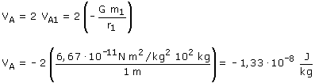

a) Cuando hay una distribución de masas, el potencial en un punto es la suma numérica de los potenciales creados en él por cada masa (Principio de superposición)
El potencial en A será el doble del potencial creado por una de las masas:  En una distribución de masas, el campo en un punto es la suma vectorial de los campos creados en él por cada masa
El campo resultante en A será nulo |